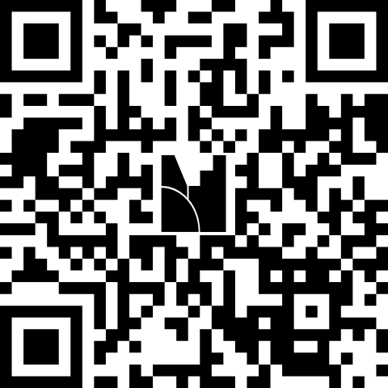

Caso práctico: aprobación de un crédito
Toque o seleccione con el teclado (Tab y Enter) cualquier elemento del diagrama para ver qué es, quién lo realiza y qué significa. Use «Recorrido guiado» para seguir el proceso paso a paso.
Cómo usar
Seleccione un elemento
Cada forma tiene un significado: círculos para eventos, rectángulos para tareas y rombos para compuertas. Los carriles indican quién hace cada tarea.
Evento de inicio
Evento de fin
Tarea
Compuerta exclusiva
Compuerta paralela
Flujo de secuencia
Elija una opción.
Participa desde tu celular
menti.com
- Abre menti.com en tu celular o escanea el código QR.
- Escribe el código de 8 dígitos que aparece en la pantalla compartida por el docente.
- Primero: nube de palabras (1 minuto). Luego: quiz de 3 preguntas (20 segundos cada una).
Tus respuestas son anónimas. ¿Sin celular? Responde en el chat de Zoom con la letra de tu opción.
Abrir Mentimeter